Logre un flujo ilimitado de alumnos.
Capte y retenga estudiantes a sus cursos.
Diplomado en
"MARKETING PARA INSTITUCIONES EDUCATIVAS"
¡Multiplique Matrícula!
Faltan
86
Días
04
Horas
28
Minutos
10
Segundos
El mayor experto en
Marketing Educativo
Comparta 4 jornadas con el pionero del marketing educativo en la era de la Inteligencia Artificial
Noviembre
Sábados 11 - 18 - 25
Jueves 30
9am - Hora de Chicago/Dallas/Ciudad de México
30
HORAS
Sin pérdida de tiempo y sin palabrerío de relleno, usted recibirá una verdadera catarata de claves para elevar a las alturas el marketing de su entidad o servicio educativo. Un entrenamiento "de elite" para quienes precisan llenar de alumnos online o presenciales un curso o carrera, inspirándose en los mejores casos de éxito mundiales. 12 horas en vivo y en directo, una hora de asesoria individual y 17 horas de coaching en streaming.
137
TIPS IMPERDIBLES
Un "bombardeo" concentrado de todos los métodos, secretos y fórmulas de éxito comprobado para aumentar el número de inscripciones a cursos, carreras, escuelas, eventos educativos, congresos, posgrados, colegios, institutos y servicios educativos de todo tipo y nivel, tanto en el campo de lo virtual como en lo presencial.
90.000
PARTICIPANTES
El experto a cargo es el pionero de habla hispana en marketing de Instituciones de Educación, con 32 años y más de 90.000 asistentes a sus conferencias en salones de hoteles de 24 países. Hoy, radicado en Liverpool, Reino Unido, sigue recorriendo el mundo capacitando y asesorando a los más innovadores proyectos educativos de la era de la inteligencia artificial.
¡No deje ni una sola silla vacía en su institución!
Las claves de MARKETING, GESTIÓN Y PUBLICIDAD para llenar de alumnos un instituto y minimizar el abandono, generando lucratividad, imagen de prestigio y recomendación

Atraer

Captar
Fidelizar
EL WEBINAR MÁS ASISTIDO Y RECOMENDADO EN EL MUNDO DE LA EDUCACIÓN PRIVADA
Noviembre
Sábados 11, 18 y 25
Jueves 30
9:00 am
Hora de Chicago/Dallas/Ciudad de México
Conozca al Experto
Es un Autor, disertante, consultor e investigador español-argentino que vive en el Reino Unido, donde dirige el Think Tank de Marketing Educativo de Liverpool. Fue Pionero en Marketing Inicialmente, gran parte de su Carrera profesional-laboral fue un prolífico estudioso y divulgador del Marketing aplicado a Entidades Educativas desde 1989. Diplomado por la Universidad Federal de Rio de Janeiro, Brasil (COPPEAD), la Universidad de California (Berkeley) y la George Washington University. Es graduado en Marketing de Servicios por el Instituto Tecnológico de Marketing.
Fue Profesor invitado, y es consultor requerido de importantes Universidades Privadas, Públicas y de Entidades Académicas de toda Latinoamérica. Autor de numerosos artículos y libros publicados en Brasil, Estados Unidos y México. Apuntado por el medio educacional de España y América Latina como uno de los más prolífico capacitadores en el campo del Marketing y la Gestión de Entidades Educacionales Privadas, la Captación y Retención de Alumnos. Ha trabajado en proyectos para universidades, colegios y franquicias educacionales de 14 países y ha capacitado más de 125,000 líderes de instituciones del sector. Como conferencista compartió Congresos con figuras de la talla de Ben Shapiro, Malcolm Gladwell, Robert Kaplan y Howard Gardner entre otros. Fue creador de “Edumarketing” (Congreso de Marketing Educacional desde 1991).
Juan Renedo es referencia en marketing educacional. Ha pasado las últimas décadas haciendo crecer proyectos educativos en 4 continentes hasta convertirlos en grandes y exitosos y en años más recientes, ayudó a supervisar proyectos educacionales en USA.
El conocimiento y la pasión de Juan por el marketing educativo lo han ayudado a atraer numerosos clientes top.
Él es responsable de que muchas escuelas, universidades y colegios ya tengan por default un área de marketing y comunicación estratégica de alta perfomance.
Detalles de este Webinar
Conozca el temario de cada uno de los módulos de la capacitación que llevará al éxito de su institución.
Módulo 1
• Evitar los principales errores del marketing educacional y aplicar los 9 principios del management educacional.
• Gestionar el cambio en las entidades educativas de gestión privada y pública e implementar la innovación como factor diferenciador.
Módulo 2
• Elaborar un plan de marketing para su entidad educativa, con estrategias y tácticas de producto, marca, precio, distribución y comunicación y las nuevas variables "P".
• Utilizar las redes sociales y las acciones por internet para prospectar, captar, retener y mejorar la visibilidad y familiaridad social de su entidad educativa.
Módulo 3
• Diseñar y ejecutar una campaña de comunicación para la captación de alumnos, con un mensaje claro, único, atractivo y con los medios más eficaces para su público objetivo.
• Vender más y de mejor manera los servicios educativos, utilizando técnicas de venta personalizada, telefónica, telemática y por redes, creando una fuerza de venta profesional.
Módulo 4
• Brindar un servicio de excelencia a los padres y alumnos, cuidando la calidad de la atención, la resolución de quejas y reclamaciones y el reconocimiento del esfuerzo y la preferencia.
• Gestionar las personas en la entidad educativa, seleccionando, capacitando, motivando y reteniendo al personal no docente, docente y creando un clima de trabajo positivo y nutritivo.
Módulo 5
• Investigar el mercado educativo, utilizando fuentes de datos primarios y secundarios, métodos de recolección de datos, técnicas de muestreo y análisis de la información.
• Gestionar los ex alumnos, creando comunidades online y offline, manteniendo una buena relación con ellos, ofreciéndoles beneficios exclusivos y generando recursos económicos a través de ellos.
Módulo 6
• Reducir la morosidad y gestionar las cuotas usando marketing, identificando los tipos de padres según su comportamiento de pago, estableciendo políticas y procedimientos de cobranza, y haciendo cobranza telefónica, por nota o personal.
• Cómo estructurar herramientas y procesos destinados a optimizar los controles, prevención y monitoreo de ingresos y egresos económicos.
Módulo 7
• Cómo innovar en las redes sociales y generar el efecto "wow" en estudiantes
• Cómo hacer campañas de imagen, posicionamiento y engagement de estudiantes
• Secretos, ideas y modelos de acción con casos internacionales de éxito
• Métodos, ideas y recursos de Internet y en las redes sociales para captar
Módulo 8
• Cómo hacer un Plan 360º de Marketing para un Instituto Educativo
• Cómo construir una poderosa "máquina de captar y retener alumnos"
• Preguntas vitales para hacer crecer su entidad y su "nombre-marca"
• Tablero de controles del marketing educativo en 8 fases vitales
• Marketing de guerrilla y de alto impacto en redes sociales e internet
Módulo 9
• Endomarketing y empowerment en el área de admisiones y promoción. El ambiente interno de la entidad educativa privada
• Cómo organizar y dirigir con éxito a los recursos humanos docentes y no docentes
• Cómo involucrar y comprometer a todos con la excelencia, calidad y servicio
• Cómo desarrollar una gran estrategia de empowerment para captar y retener alumnos
• Poderosos y prácticos consejos para reclutar, entrenar y motivar empleados
Módulo 10
• Efectividad 100% en la conversión de interesados
• Cómo crear un equipo ganador de promotores súper eficaces y motivados
• Organización y funcionamiento del Front desk de informes en IES
• El "discurso perfecto" que deben tener nuestros empleados de informes.
• Casos, casos, casos y espacio de preguntas y respuestas.
¿Qué dice la gente de este
diplomado internacional?
Numerosas instituciones privadas han participado y compartido sus casos de éxito al aplicar los conocimientos impartidos en este webinar.

 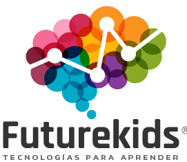
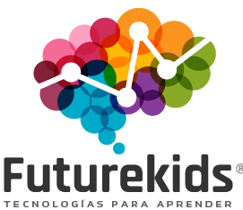
 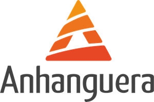
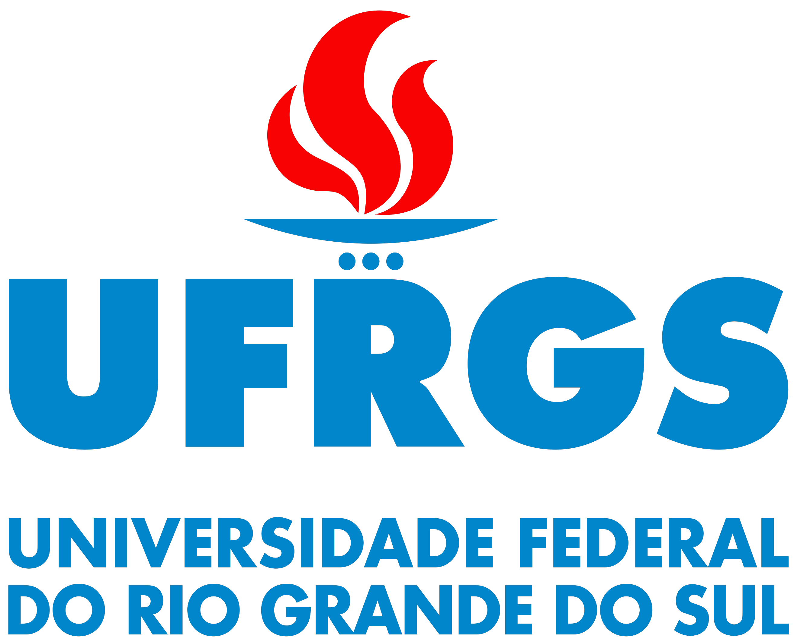
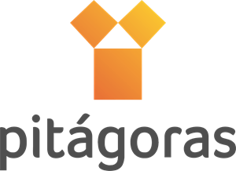
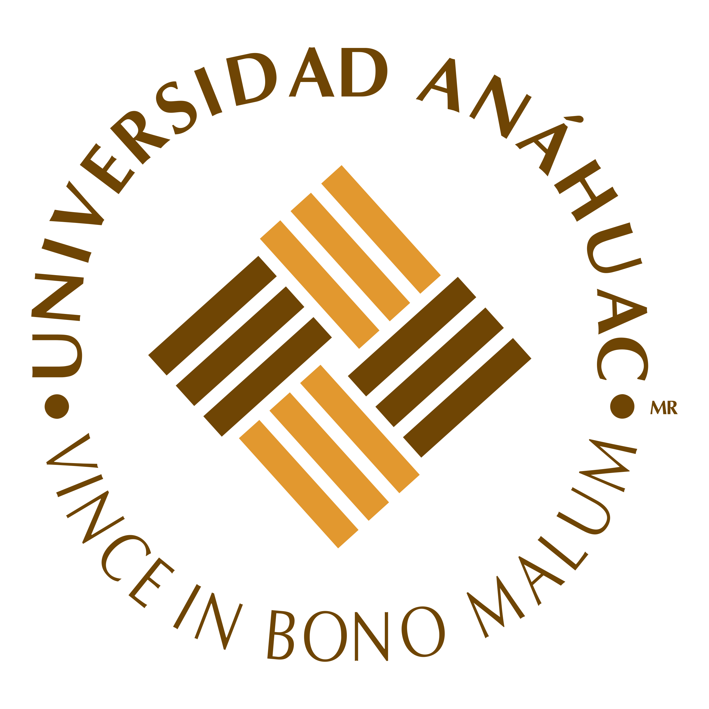
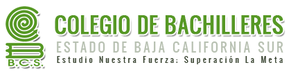
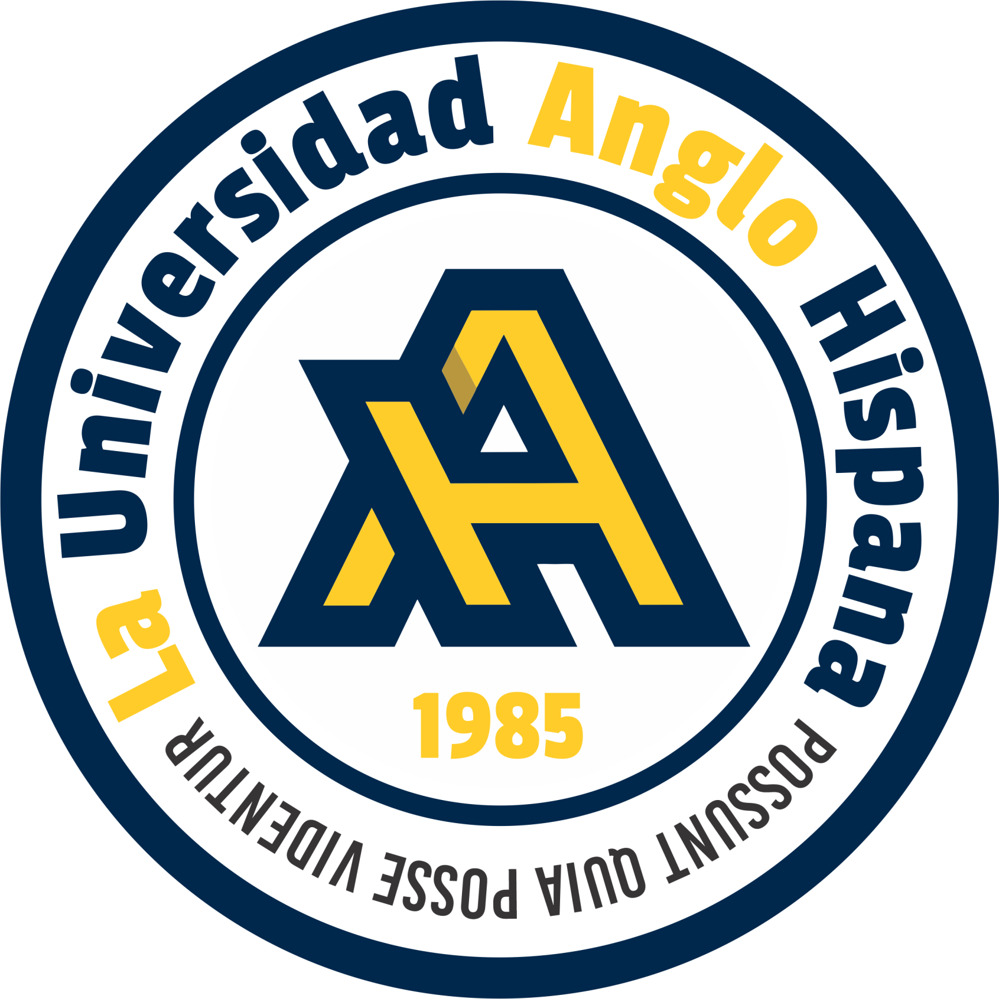
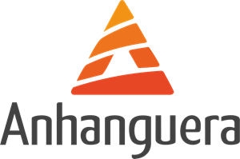
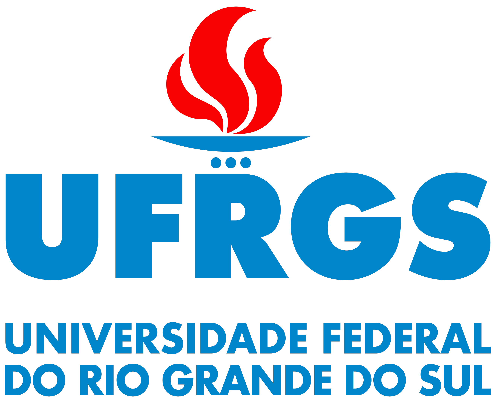
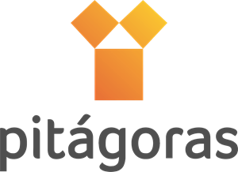
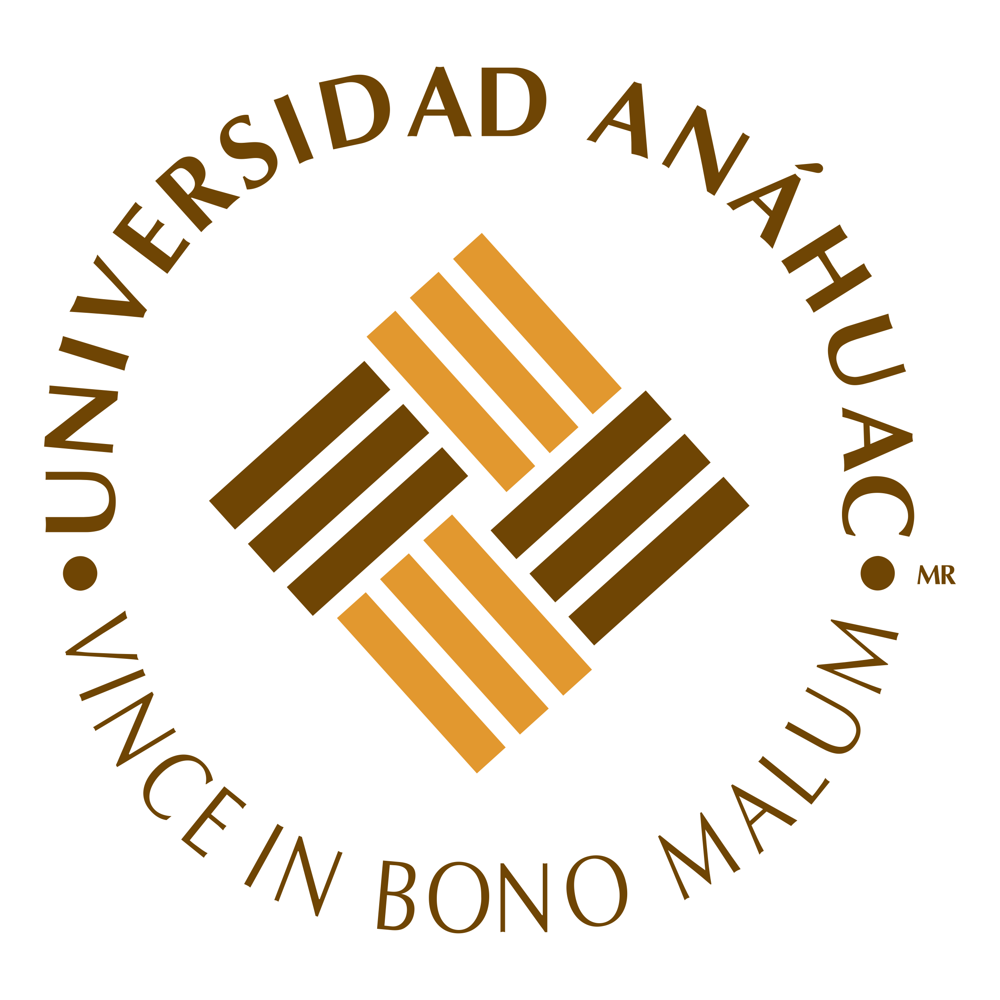
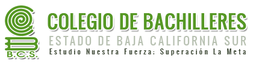
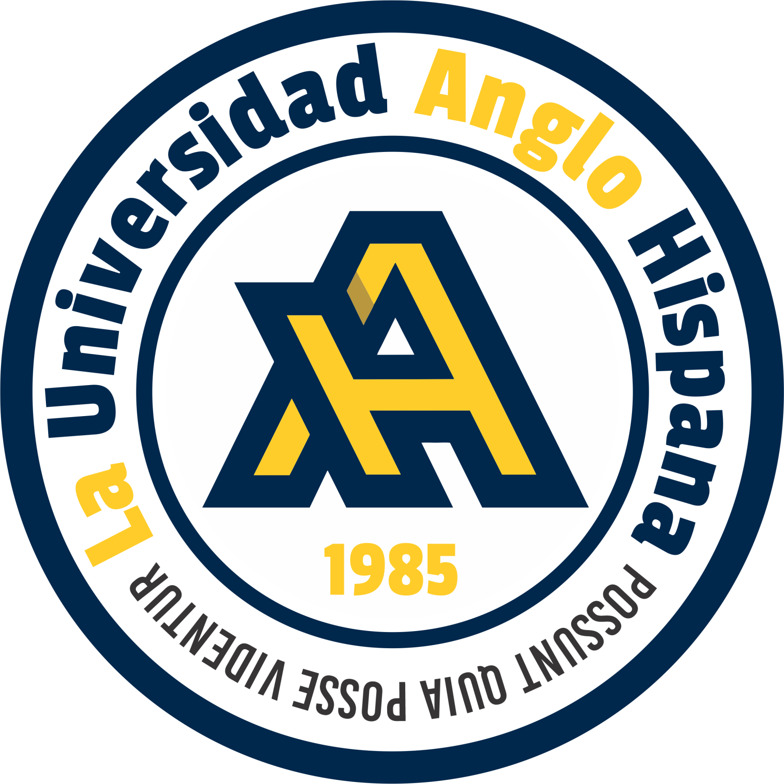
 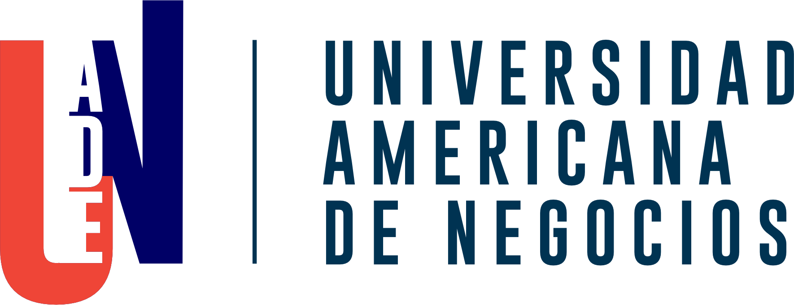
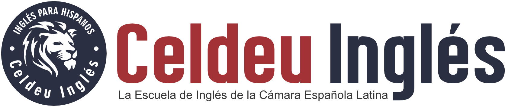
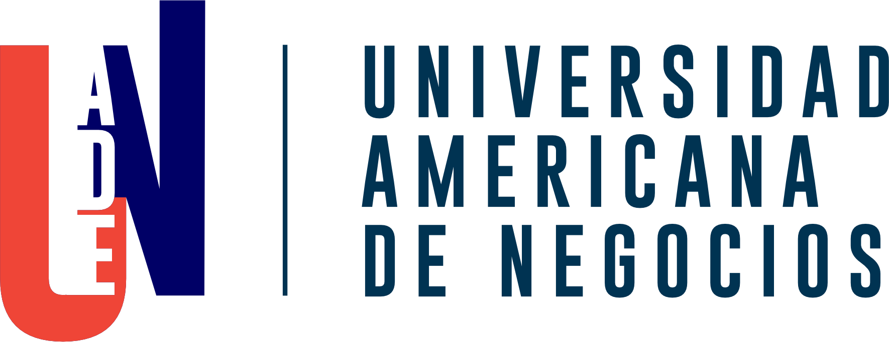
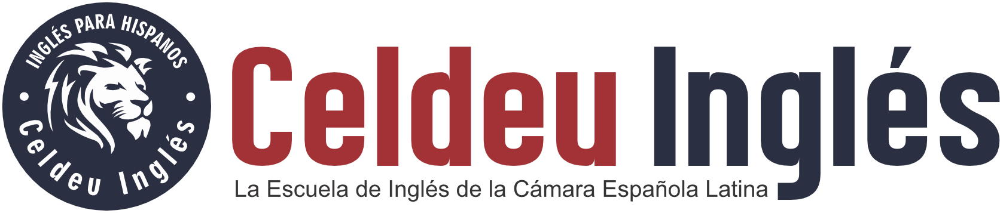
“Muy interesante en cada tramo de la conferencia. En ningún momento el Prof. Renedo ha dejado que mi cerebro se distrajera en otras cosas y el ritmo de la explicación hizo que nunca me sintiera cansado, y al final me voy con prisa y entusiasmo para hablar con mis colaboradores para empezar a hacer los cambios que he visto que son indispensables”
Alfonso Nieto
Rector de la Universidad de Navarra (España)
“Un Seminario donde cada minuto, se aprende algo curioso, novedoso o sorprendente para quienes incluso llevamos años en la dirección ejecutiva de Instituciones educacionales. Felicitaciones a la organización y al orador”
Ascencio Villegas Arrizón
Rector de la Universidad Autónoma de Guerrero “UAG” (México)
“Excelente seminario con ideas muy innovadoras, ejemplos muy concretos y prácticos los cuales pueden ser fácilmente aplicados, gran calidad del equipo humano. Los felicito y motivo a que continúen trasmitiendo sus conocimientos y experiencias para el crecimiento de otros profesionales”
Geudith Rivera Villalobos
Corporación Educativa Santa María (México)
“Me pareció excelente y de aplicación inmediata. Sin ser una colección de verdades reveladas el seminario me permitió conocer temas, como el de la Comunicación Científica y el Neuromarketing. También nos hizo reflexionar sobre la línea de fuego en el área de informes y la necesidad de profesionalizar y capacitar apropiadamente a este personal. Lo recomiendo ampliamente”
Enrique Santa Cruz Polanco
Centro de Estudios de las Américas (México)
"Mil gracias, de verdad el curso ha rebasado mis expectativas, he aclarado mi panorama y me ha dejado el camino correcto por el cual debo actuar para llevar a mi institución al éxito, el seminario toca muchos puntos reales y muy aplicables al mercado actual, además el expositor no se cansa de lanzar ideas y ejemplos para que los participantes saquemos el mejor provecho del mismo, sin duda la mejor inversión que hemos hecho en muchos años. Mil gracias."
Mtro. Paulo Cesar Anaya López
Colegio Independencia /del (Estado de México)
“Un curso conciso, intenso, divertido, que va al grano sin pausa. Me enriqueció significativamente. Gracias”
Luis Jaime Cortez
Conservatorio de las Rosas (México)
“La experiencia que tuve en la conferencia de Marketing Educativo sobrepaso mis expectativas y me lleno de entusiasmo para poner en práctica todos los consejos y lecciones aprendidas en estos dos días llenos de energía positiva. ¡Excelente dinámica y muy buenos ejemplos! Recomiendo a Juan Renedo para cualquier otra conferencia en el futuro”
D. Roger Valladares
Vice Presdiente Ejecutivo Universidad Tecnológica (Honduras)
“El Seminario Internacional de Marketing para Instituciones Educativas, fue para mi una oportunidad de descubrimiento sobre todas las áreas en las que el departamento de Mercadeo de un colegio puede mejorar directa e indirectamente. Al mismo tiempo fue un espacio de camaradería donde expertos colegas moderados por el presentador tuvimos oportunidad de compartir éxitos, dificultades y situaciones cotidianas dentro de las instituciones educativas, mas que un curso o un taller, este fue una grata experiencia y oportunidad de crecimiento personal y profesional”
Adrian Ptacnik
Coordinador Académico y de Markerting
Colegio Americano de Mexicali (México)
“Hola Juan Renedo.... me da gusto saludarte y felicitarte por el excelente seminario que se impartió el 5 y 6 de diciembre creo que valió la pena la inversión, valió la pena el no estar en nuestros colegios dos días, valió la pena el viajar al D.F. estamos deseosos los directivos de escuelas de cursos, seminarios ,congresos...etc. de marketing específicamente para escuelas ya que hay poco escrito y poco publicado en este renglón, considero el marketing en la escuela tan importante y vital de cuidar como lo hace uno con el trabaja académico y administrativo. felicidades me pareció muy valioso lo visto en este seminario”
Francisco Javier Hernández Pérez
Colegio Cultura Puebla (México)
¿Qué puede esperar de este Diplomado?
Ahora, los cursos y clases online son una realidad para la propia supervicencia de las entidades educativas privadas. Este curso de 4 sábados ha sido diseñado especialmente pensado en los retos únicos a los que se enfrentan las instituciones educativas en esta Pandemia y a posteriori.
El curso busca transmitir al participante todo lo más avanzado de la gestión del Marketing online de instituciones educativas, con indicaciones concretas de cómo aplicar las técnicas en la realidad cotidiana.
Se busca que los participantes conozcan un conjunto de técnicas que puedan ser aplicadas en el día a día de la actividad de captación y fidelización de alumnos en la nueva biósfera online tanto sea de clases como de venta a distancia.
¿Alguna pregunta?
Sabemos que típicamente surgen dudas sobre este programa en línea, en vivo y en directo y por ello, es que ponemos las respuestas a las preguntas frecuentes
Los asistentes obtendrán experiencias, consejos y formación en marketing para captar alumnos y comunicarse eficazmente con la comunidad de padres, docentes, potenciales alumnos, alumnos actuales y ex-alumnos. Recibirán también ideas del mundo de las instituciones educativas, a través del desarrollo de casos, ejemplos y recomendaciones concretas para captar y conseguir "engagement" de alumnos, ex-alumnos y potenciales alumnos. Todo a través de numerosos casos reales de éxito en instituciones de diversos países.
Su escuela, empresa educacional o entidad de servicios educacionales puede contratar este programa de capacitación, en formato in-company para que sea dictado en forma exclusiva para su personal, adecuando el programa a las necesidades específicas de su organización. Usted elige dónde y cuándo.
Somos la Consultora que organiza desde 1989 los Congresos y Conferencias denominados EDUMKT. Es una entidad privada dedicada a la capacitación, consultoría y organización de eventos presenciales y online de dormación para Entidades educativas. Su formación está basada en el método de “casos” de la Universidad de Harvard. Fundada en 1999, en Miami, (EUA) genera e imparte cursos, seminarios, conferencias presenciales y a distancia sobre los más diversos temas de la gestión de universidades, escuelas, franquicias de cursos y colegios.
12 horas de capacitación en vivo en directo a cargo del especialista internacional, una hora de asesoría privada y 17 horas en streaming. El Diplomado incluye material didáctico descargables de todas las ponencias, apunte tipo e-book, garantía de backup online streaming para casos de desconexión. derecho a participación sin límite de asistentes en un solo IP, Diploma de participación. Listado de e-mails de los participantes.
Este programa otorga un Diploma que es una certificación. El curso es en formato virtual transmitido desde los Estados Unidos con una carga horaria de 12 horas en vivo y en directo, basado en casos de las mejores y más exitosas Universidades, Colegios, Escuelas, Franquicias de Cursos e Institutos de Enseñanza del mundo entero. La Certificación Final es recibida por cada participante en su correo electrónico al finalizar las Jornadas.
Porque ser un Especialista Certificado en Marketing Educacional es una credencial de competencia internacional que abre puertas laborales, sirve para validar el conocimiento y las habilidades clave en este tipo de rol dentro de este sector. La credencial demuestra dominio de los principios de dirección y administración de marketing específico.
El graduarse de este tipo y nivel de programas transforma al graduado en un candidato “de oro” y “muy apetecible” para ser contratado para funciones de importancia o de dirección para cualquier Colegio, Universidad u organización del sector de la educación. A través del conocimiento demostrado, la credencial eleva la credibilidad del profesional y de la organización en la cual se desempeña.
Es una imperdible fuente de actualización y enseñanza, totalmente enfocada a los profesionales, administradores, directivos de colegios, universidades y escuelas. También dirigido a profesionales de comunicación, marketing y enrolamiento de alumnos de las entidades de la educación privada que sean responsables de la gestión comercial-fnanciera y administrativa de organizaciónes de los más variados niveles educacionales (Universidades, Facultades, Centros Educativos, Colegios, Institutos de Idiomas, Institutos Técnicos, Cursos profesionalizantes y mucho más…)